● A self-exclusion stack · macOS · iOS · May 2026
A defense-in-depth guide to blocking gambling sites on your own devices, designed for people who don't trust themselves.
Most "site blockers" can be uninstalled in thirty seconds. That's not a block — that's a speed bump. This guide builds something different: a stack of seven independent layers, each closing a different bypass route, none of which can be undone without hours of deliberate effort. It exists because the person who built it needed it, and is releasing it so other people don't have to figure it out alone.
Before you start
This will take an afternoon. Maybe two. It needs to be done on a clear-headed day, not in the middle of an urge.
If you've found this page, you probably already know the shape of the problem. Browser extensions get uninstalled. Self-exclusion at one casino gets routed around at the next. Gamban or Bet Blocker gets turned off "just to check one score" and never gets turned back on. The block stops working the moment you decide it should stop working — which is exactly when you most need it not to.
What follows is a setup that takes that decision away from your future self. It isn't elegant, it isn't a single product, and it isn't free. It's a stack of seven different mechanisms layered on top of each other, each closing a specific bypass route the previous one couldn't cover. To undo it casually is impossible. To undo it deliberately takes hours of focused work — long enough that the urge that motivated you has almost certainly passed.
A few things to know before you commit:
- This is software, not therapy. A locked-down phone has never cured anyone. If you aren't already getting human support — Gamblers Anonymous, a therapist who knows behavioural addictions, an accountability partner, a family member who's allowed to ask — please add that alongside this. There's a list of resources at the bottom of this page.
- Do this when you're sober and steady. Not in the middle of a craving, not during a chase, not after a loss. The setup involves entering credentials, signing up for services, and making decisions you can't easily walk back. Pick a quiet morning.
- Have an accountability partner aware of what you're doing. Ideally someone who can hold a piece of paper for you (you'll see why). A partner, a sibling, a sponsor, a close friend. Not optional.
- Back up anything important first. Locking down DNS and modifying system files is reversible, but the reversal involves Recovery Mode. Better to have a Time Machine backup than to find out later you've locked yourself out of something legitimate.
- This is for macOS 15 (Sequoia) and iOS 17 or newer. Older versions will mostly work but a few of the profile keys behave differently. If you're on something much older, the structure still applies but the exact toggle names may move around.
This guide is written by someone who needed it. It assumes you're an adult, that you know what you're trying to do, and that you don't need to be talked down to about it. It also won't pretend that any of this is easy or that the technology is doing the hard part — you are.
What this stack does
The trick to blocking yourself from yourself is to recognise that there's no single chokepoint. A determined version of you — one who's spent the past hour talking yourself into it — will try every angle. So instead of building one big block, this setup builds seven small ones, in series, each watching a different door.
| Layer | What it does | What it stops |
|---|---|---|
| 1. Cloudflare Gateway via Tech Lockdown |
62,636 gambling apex domains blocked at the DNS layer for any device using your Cloudflare-routed connection. | Casinos, sportsbooks, slot platforms, casual-gambling apps. The bulk of the actual blocking work. |
| 2. WARP + Enforcer Cloudflare client, locked on |
Tunnels all your Mac's traffic through Cloudflare so the Gateway rules apply. The Enforcer Tool prevents WARP from being disabled or uninstalled. | Disabling WARP. Switching DNS to bypass Gateway. Network-switch drops. |
| 3. /etc/hosts, immutable | The same blocklist baked into your Mac's host file, with the system-immutable flag set so it can't be edited or deleted from a running OS. | Fallback if WARP drops momentarily. Defence-in-depth for offline DNS bypasses. |
| 4. dnsforce PF firewall + watchdog |
Kernel-level packet filter that blocks DNS-over-HTTPS, DNS-over-TLS, and DNS-over-QUIC to every public provider. Allows plain DNS only to your current system resolvers. Self-heals across network switches. | The big bypass: browsers with DoH enabled, which ignore your hosts file entirely. Closes that hole at the OS layer. |
| 5. Browser DoH profile configuration profile |
macOS configuration profile that disables DoH and locks proxy settings to direct in 33 browser variants. Protected by a profile removal password you'll generate and discard. |
Re-enabling DoH inside a browser. Adding a proxy or VPN extension. Installing a different browser to bypass. |
| 6. Tech Lockdown profile lock | The Tech Lockdown account itself is gated behind 888 random characters plus a passcode you give to your accountability partner. You can't log in and change settings without going through them. | The "I'll just turn it off for a minute" route through the management UI. |
| 7. Cloudflare 2FA | 2FA on Cloudflare with a hardware key or TOTP, recovery codes given away. You can't disable the Gateway rules without going through your accountability partner. | Logging into Cloudflare and deleting the block rule. |
Each layer is designed so that bypassing it would take such a long time, that you don't even want to try.
What you'll need
The bulk of the cost here goes to Tech Lockdown, which provides the management surface, the WARP+Enforcer installer, and the iOS profile generator. Tech Lockdown offers a 7-day free trial — long enough to set everything up, but the stack relies on its WARP Enforcer and account lock features, so plan for the ~$10/month afterward. Cloudflare is free at the tier we use. Applivery is optional, and even when you use it, the 14-day free trial is enough to set everything up and then cancel.
| Service | Role | Cost |
|---|---|---|
| Cloudflare | DNS gateway, hosts the 62k-domain blocklist | Free |
| Tech Lockdown | Management UI, WARP installer + Enforcer, signed iOS profile, account lockout features | $9.99/month billed annually (7-day free trial) |
| Applivery (optional) | MDM enrollment, profile removal password policy, Recovery Lock command | From €3/device/month on the Advanced plan (annual billing) — 14-day free trial is enough to set everything up and cancel |
You'll also need:
- A Mac (Apple Silicon or Intel; macOS 15 or newer recommended).
- An iPhone if you want the iOS layer.
- An accountability partner — someone who will hold a passcode or a recovery code for you.
- About 3 hours for the Mac setup. About 30 minutes for iOS.
- A scrap of paper and a pen. Genuinely. You'll be writing things down to give away or destroy.
The author of this guide is not affiliated with Cloudflare, Tech Lockdown, or Applivery. They're named here because, after trying every option on the market, these are the three that worked. If something better appears, swap it in — the architecture matters more than the brand.
Cloudflare + Tech Lockdown
The first thing to set up is the brain of the stack: Cloudflare Gateway, managed through Tech Lockdown's wizard. Tech Lockdown is a thin, opinionated UI on top of Cloudflare Zero Trust — they don't run the DNS infrastructure themselves; they orchestrate Cloudflare on your behalf. This is good, because Cloudflare's free tier handles all the actual traffic.
Sign up for both
- Create a Cloudflare account at dash.cloudflare.com/sign-up. Use a real email you have access to but that you can later forget the password for.
- Inside Cloudflare, navigate to Zero Trust from the left sidebar. You'll be asked to name your "team" — pick any name. The free plan covers up to 50 users; you're one of them.
- Sign up for Tech Lockdown at techlockdown.com and start the 7-day free trial. You can cancel later if you don't keep using it — but note that the Mac Enforcer Tool, the signed iOS profile, and the account-lock features all require an active subscription, so plan for the ~$10/month if you want the full stack to keep working long-term. The Cloudflare lists and rules you create stay in place either way.
Connect them
Tech Lockdown's getting-started flow walks you through linking your Cloudflare account: help.techlockdown.com → Getting Started. Follow that. It involves generating a Cloudflare API token with Zero Trust scope and pasting it into Tech Lockdown. Don't skip a step — the connection is what makes everything downstream work.
When you land on the Tech Lockdown dashboard for the first time, you'll see a Setup Progress checklist on the right-hand side with five steps: Link Cloudflare Account → Create Content Policy → Connect Devices to your Content Policy → Customize Profile Locking → Improve Blocking & Bypass Prevention. The checklist mirrors the order of this guide. Tick through it.
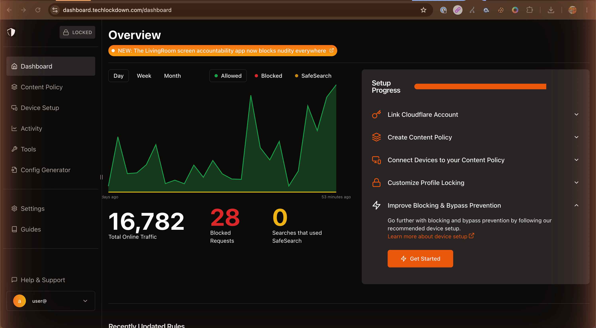
Left sidebar: Dashboard (overview), Content Policy (block/allow rules), Device Setup, Activity (DNS query log), Tools (the page where you download WARP and the Enforcer), Config Generator (the wizard that produces the signed iOS profile), Settings, Guides. Top right is the Locked / Unlocked indicator — once you've set up Profile Lock, click that pill to unlock. Settings has nine subsections worth knowing about: Profile, Locking Preferences, Users (use this to add an accountability partner as a co-admin if you want them to be able to make policy changes themselves), Subscription & Billing, Cloudflare Connection, Routers, Traffic Logging, App Preferences, Certificates.
iOS Device Setup wizard (do this before the Config Generator)
Before you produce the signed configuration profile in Config Generator, Tech Lockdown wants your iPhone to be in two specific states: supervised, and connected to your Content Policy via the Cloudflare One / WARP app. The dashboard's Device Setup page (left sidebar) walks through both checks as a five-step wizard. Run it before the Config Generator — if you skip it, the profile you generate later won't have anywhere to attach itself.
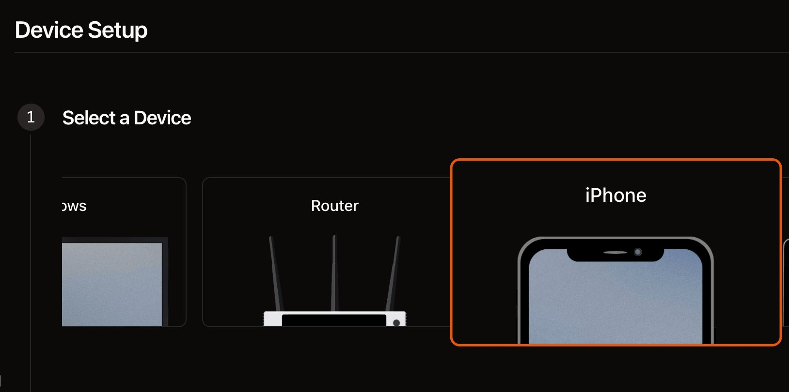
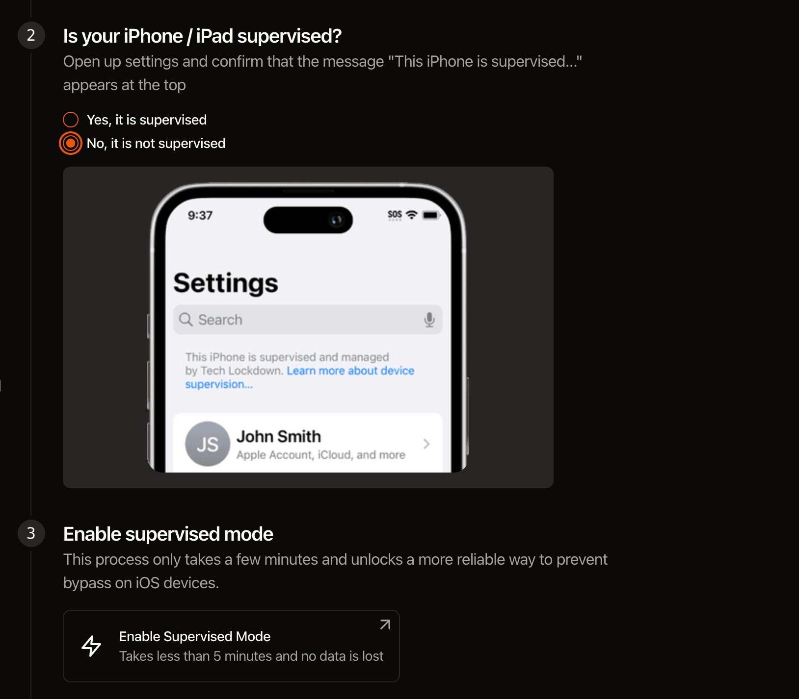
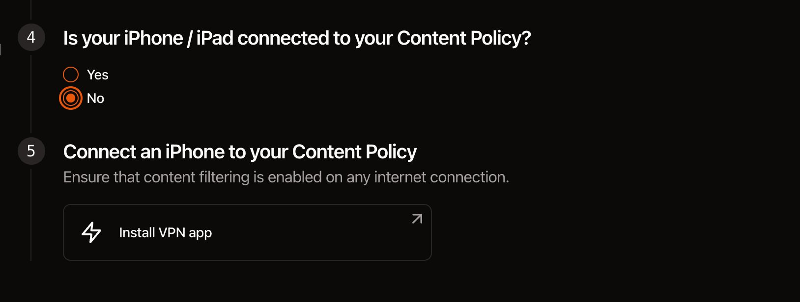
With the iPhone supervised and the WARP/Cloudflare One app installed and signed in, you've completed the prerequisites. The phone is already being protected at the DNS layer — every gambling apex on the 62,636-domain list returns a Cloudflare block response. Now you move on to the Config Generator (next sub-section) to produce the signed iOS configuration profile that locks down the DNS settings, prevents new VPNs from being installed, blocks specific apps and URLs, and makes the whole arrangement removal-protected.
iOS configuration tabs
Once the iPhone is supervised and the WARP app is installed (previous sub-section), Tech Lockdown's Config Generator page walks you through producing the signed iOS configuration profile. There are five tabs: Apps, General, Network, Config Preferences, and Web. The settings to flip away from default are below — adjust them as needed for your specific situation, but the screenshots show what worked.
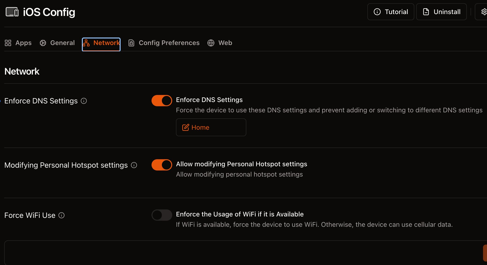
Four things to call out:
- Enforce DNS Settings ON. This is the whole point. It pins the device to Cloudflare's encrypted DNS gateway and uses
ProhibitDisablementto prevent you from turning the DNS profile off in iOS Settings. This is the iOS layer's main job. - Allow modifying Personal Hotspot ON. Counter-intuitive, but: if you ever need to share your iPhone's connection to a laptop for a captive portal or a tethering situation, you'll want this enabled. The blocking still applies because the DNS enforcement travels with the device, not with the connection.
- Force WiFi Use OFF. If your home Wi-Fi has a problem and you fall back to cellular, you still need internet. This makes the iOS profile work everywhere, not just on a specific network.
- Prevent Adding New VPNs ON (further down the Network tab — scroll). This is the critical one. Without it, you could install Mullvad, ProtonVPN, NordVPN, or any free VPN from the App Store and tunnel your traffic around Cloudflare entirely — every layer of the stack ignored in a tap. With it on, iOS refuses to install or activate new VPN configurations; only the managed Cloudflare DNS profile is allowed to handle traffic. Turn this on.
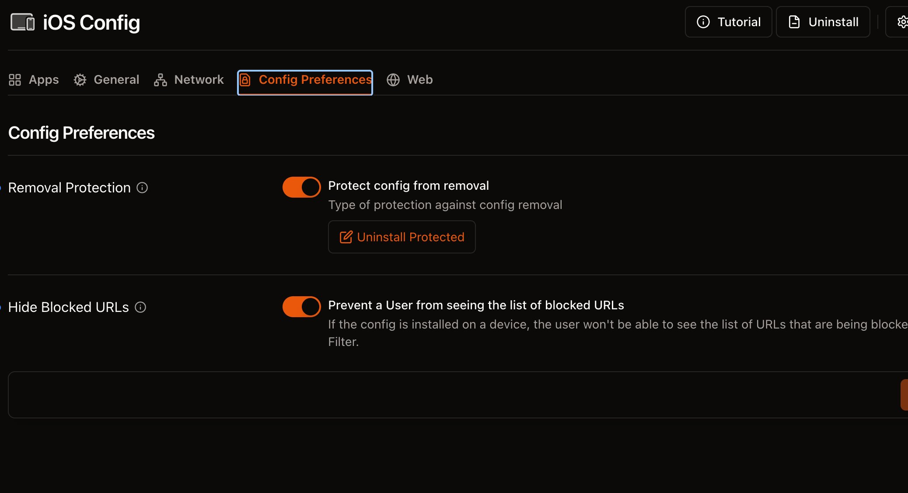
- Removal Protection / Uninstall Protected. The iOS profile is installed with
PayloadRemovalDisallowed=true, meaning iOS itself refuses to remove it. There is no password prompt — the option to remove simply isn't there. The only way to undo it is to factory-reset the phone, which is loud enough that you'd notice yourself doing it. - Hide Blocked URLs ON. When the iOS Web Content Filter blocks a domain, the filter itself contains the list of blocked URLs. By default, you can read that list in Settings — which is a feature for parents managing kids' devices but a problem for someone managing themselves. Hiding it means you can't accidentally turn the filter into a "best gambling sites I've forgotten about" reference.
macOS configuration tabs
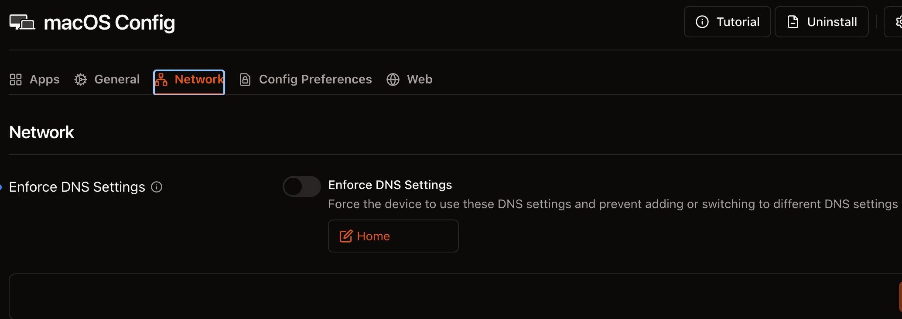
On macOS, leave Enforce DNS Settings off. The reason is technical: macOS handles DNS profile enforcement less reliably than iOS, especially across WiFi/cellular switches and captive portals. Instead, on the Mac we rely on WARP (which routes traffic to Cloudflare Gateway anyway), the locked /etc/hosts file, and the dnsforce PF firewall covered in Section 08. Together, those three give better results than the profile-based DNS enforcement does on macOS.
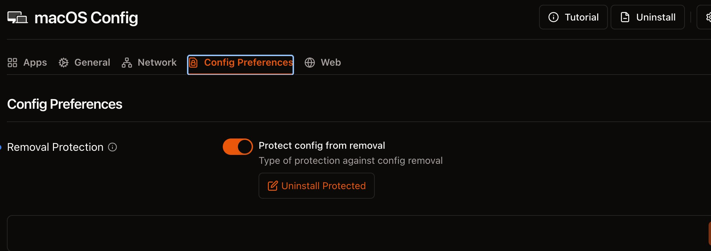
One macOS-specific setting worth calling out: disable the Guest Account. Without this, a logged-out version of you can boot into the macOS Guest user, which doesn't have any of your configuration profiles applied. That's an obvious bypass. Turning the Guest Account off closes it.
Tech Lockdown also lets you add a per-platform Custom Block List — a small set of domains that the macOS Content Filter blocks at the system layer, separately from the 62k Cloudflare list. The list used in the original setup is in reference/tld-macos-extra-blocklist.txt. It covers categories the gambling-DNS list doesn't fully cover: "antidetect" browsers, niche crypto-casino frontends, browser-fingerprint spoofing tools, and a handful of streaming sites (like Kick) that host livestreamed slot content. Paste those into Tech Lockdown's interface, edit to taste.
Kick is a livestreaming platform that openly courts gambling sponsorships and hosts a large amount of slot-stream content. Even if you'd never go to a casino directly, twenty minutes of someone else playing slots on Kick is functionally the same gateway. Blocking it on iOS at the app level (bundle IDs com.kick.mobile and com.kick.streaming) and on macOS at the DNS level handles both sides.
The Apps and Web tabs (iOS only)
The other two iOS tabs are where the per-app and per-URL blocklists live. They're independent from the Cloudflare DNS layer — they kick in at the iOS kernel level even if DNS resolution somehow gets through.
- Apps tab. Paste in the bundle IDs from
reference/tld-ios-blocked-apps.txt. At minimum, addcom.kick.mobileandcom.kick.streaming(the streaming platform that pipes slot content), plus any specific gambling apps you've used in the past. Bundle IDs for unlisted apps can be found by searching apps.apple.com for the app name and copying the numeric ID + reverse-domain identifier. - Web tab (Web Content Filter). A high-priority list of URLs the iOS native content filter blocks regardless of DNS. Paste in
reference/tld-ios-web-content-filter.txtfor a starter set — about a dozen of the most-visited gambling domains. This is your belt-and-braces for iOS: if DNS is ever somehow circumvented, the URL filter still catches the obvious targets.
The General tab on iOS has a handful of toggles that are mostly fine left at default. Worth flipping: turn off Safari's private browsing if you've ever used it as an end-run around content filters, and consider disabling App installations if you're prone to installing a new sportsbook app every time you find one. Both can stay on if you don't actually need them locked down.
The 62,636-site blocklist
This is the layer that does the bulk of the actual blocking. Tech Lockdown's built-in rule editor can handle a few hundred domains comfortably, but it isn't designed for the comprehensive list of every gambling apex domain on the public internet. For that we go directly to the underlying Cloudflare Gateway and use a feature called Lists.
How Cloudflare Lists work
A Cloudflare Zero Trust account on the free tier can have up to 100 Lists of up to 1,000 entries each. A single DNS rule can reference all of them via a Wireshark-style expression. With 62,636 apex domains spread across 63 lists, the expression that combines them comes out to about 4 KB — well under Cloudflare's 140 KB expression cap.
The matcher we use is any(dns.domains[*] in $list_uuid), repeated once per list with or between them. The dns.domains[*] field covers the apex domain and every subdomain — so if stake.com is in the list, then www.stake.com, cdn.stake.com, and any other subdomain are all matched without needing separate entries. This is what makes 62,636 apex entries cover effectively the entire publicly-visible gambling internet.
Cloudflare reorganised its Zero Trust UI in 2026. What used to be "Gateway → Firewall policies" is now Traffic policies → Firewall policies, and what used to be inline "Lists" is now Reusable components → Lists. The script in this bundle goes directly to the API and doesn't care about the UI, but if you ever need to view or hand-edit, the paths are:
• Your 63 lists: Zero Trust → Reusable components → Lists. Each shows 1,000 hostname entries.
• The umbrella block rule: Zero Trust → Traffic policies → Firewall policies → DNS tab. The rule's name is "Self-Exclusion Blocklist (umbrella rule)".
• API tokens: the cog icon at the top of the Cloudflare account dropdown → API Tokens. Not under Zero Trust.
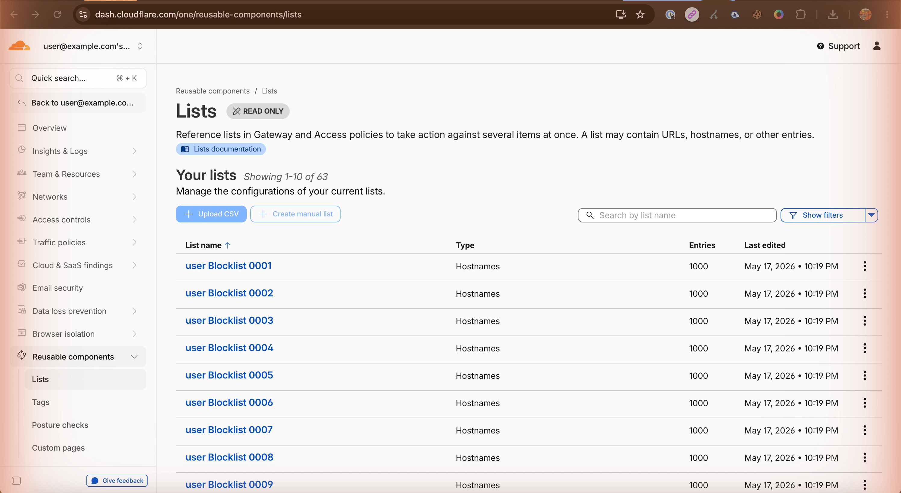
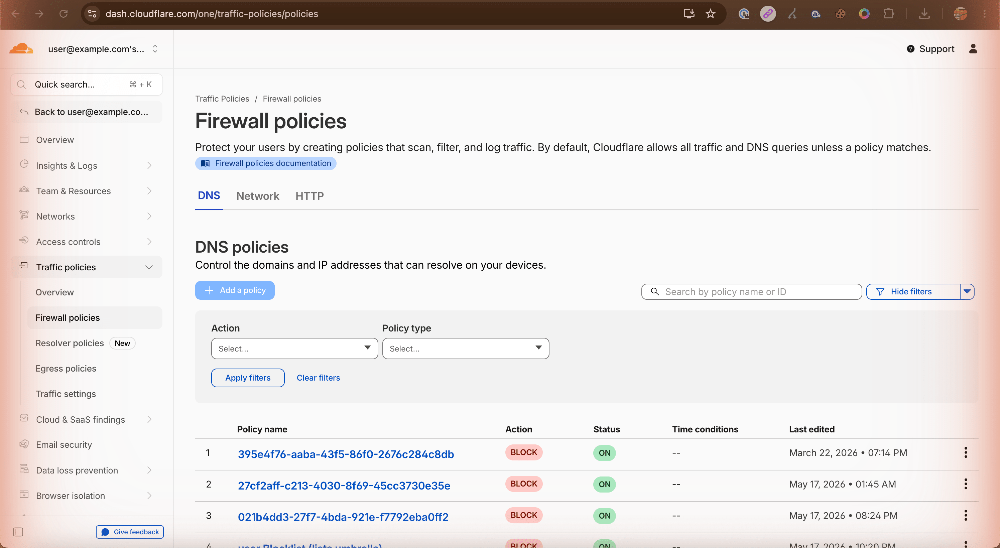
any(dns.domains[*] in $list) expression.Create a Cloudflare API token
The script in cloudflare/migrate_to_lists.py needs an API token with Zero Trust edit permissions to create the lists and rule. Here's how to make one:
- In Cloudflare, click your profile icon (top right) → My Profile → API Tokens.
- Click Create Token, then scroll to Custom token and click Get started.
- Name it something obvious: "self-exclusion migration token (delete after use)".
- Add one permission: Account → Zero Trust → Edit.
- Under Account Resources, scope it to your Zero Trust account.
- Continue to summary, then Create Token. Copy the token shown once — you can't read it again afterwards.
You'll also need your Cloudflare account ID. It's in the URL when you're on the Cloudflare dashboard — the long hex string between /accounts/ and the next slash. Or it's shown in the right-hand sidebar of any Zero Trust page.
Run the migration script
The script lives at cloudflare/migrate_to_lists.py in this bundle. Edit the two placeholders near the top:
CF_ACCOUNT_ID = "PASTE_YOUR_CLOUDFLARE_ACCOUNT_ID_HERE"
CF_API_TOKEN = "PASTE_YOUR_CLOUDFLARE_API_TOKEN_HERE"If you've never used Python on this Mac before, the next two subsections walk you through it. If you're an engineer, skip ahead to the four commands.
If you've never used Python before
Python 3 is the language the migration script is written in. macOS ships with a Python 3 already (used by the system), and that's enough — you do not need to install anything else if you don't want to. Open the Terminal app (Applications → Utilities → Terminal, or press ⌘-Space and type "Terminal") and check:
python3 --version
# Expected output, something like:
# Python 3.9.6 (or any 3.x — 3.9 or newer is fine)If you see a version number, you have Python; jump to "Install the one dependency" two paragraphs below. If you get "command not found" or a popup asking you to install the Command Line Developer Tools, click Install in the popup, wait five minutes for it to finish, then re-run python3 --version.
If you'd rather have a newer, cleaner Python install (not strictly required), the two easiest paths are:
- The official installer. Download the "macOS 64-bit universal2 installer" from python.org/downloads/macos. Run it. Click through. After it finishes, close and reopen Terminal so the new
python3is picked up. - Homebrew (if you're already using it):
brew install python. If you don't know what Homebrew is, skip this — the system Python or the python.org installer is simpler.
Install the one dependency
The script needs one external library called requests (used to talk to Cloudflare's API). Install it with pip, which ships alongside Python:
pip3 install --user requests
# or, on some macOS setups:
python3 -m pip install --user requestsThe --user flag installs the library just for your user, no sudo / admin password needed. On the most recent macOS / Python combinations, pip may complain about an "externally-managed environment" and refuse the install. If that happens, the fix is one extra flag:
pip3 install --user --break-system-packages requestsThat flag sounds scarier than it is — it just tells pip "yes, I really mean to install this into the user-Python folder." For a one-shot dependency like this, it's safe.
Now, from the cloudflare/ directory inside this bundle (use cd to navigate there — if you don't know the path, drag the cloudflare folder into Terminal after typing "cd " and macOS will fill in the path for you), run the script:
# Preview what cleanup would do, without changing anything
python3 migrate_to_lists.py --phase cleanup --dry-run
# If the preview looked sane, run everything end-to-end (creates 63 lists + the umbrella rule)
python3 migrate_to_lists.py --phase all --yesThe full run takes 3–5 minutes on a typical home connection. You'll see live progress like [lists] 17/63 ✓ Self-Exclusion Blocklist 0017 → 8a3f… (1.2/s) as each list is created.
The script runs in three phases, each independently resumable:
- cleanup — Deletes any inline-domain rules left over from previous attempts (detected by signature, not by name).
- lists — Creates 63 Cloudflare Lists of up to 1,000 apex domains each from
apex_only.txt. Runs in parallel with backoff on rate limits. - rule — Creates one DNS Block rule named "Self-Exclusion Blocklist (umbrella rule)" with an expression referencing all 63 lists OR'd together.
State is persisted in .cf_migration_state.json in the working directory, so if anything fails partway through you can re-run safely. Expect the whole run to take 3–5 minutes on a normal connection.
Verify the block is live
Wait two minutes for Cloudflare to propagate, then test:
dig +short stake.com @1.1.1.1
# This bypasses Cloudflare Gateway and goes to public DNS.
# You'll see real IPs. That's expected — we haven't installed WARP yet.
# Once WARP is installed (next section), this same query through
# the system resolver should return 0.0.0.0 or a Cloudflare block response.Delete the token and the script
Once the lists and rule are in place, the API token has done its job. Delete it immediately:
- Cloudflare → My Profile → API Tokens → find your token → Roll or Delete.
- Remove the script from your Mac (
rm -rf cloudflare/), or at least clear the credentials from the file.
Why? The token has edit permissions on your Zero Trust account. As long as it exists, a future-you who finds it lying around in ~/Downloads can use it to delete the entire blocklist in three lines of Python. Burning it removes that option.
The 62,636 entries in apex_only.txt are public, well-known gambling apex domains aggregated and deduplicated from multiple community-maintained blocklists. There's no proprietary or sensitive data in the list. You're free to inspect it, filter it, or add to it before running the script. The contents update slowly — gambling operators rebrand and acquire new domains constantly, but the apex-only approach means a single entry covers every subdomain forever, which buys a lot of inertia.
WARP & the Enforcer Tool
Cloudflare's WARP is a tiny VPN-style client that routes your Mac's traffic through Cloudflare's edge. Tech Lockdown uses it as the delivery mechanism for the DNS rule we just created — once WARP is connected to your team, every DNS lookup on the Mac flows through the Gateway rule, and gambling domains start returning a block response instead of a real IP.
By itself, WARP is removable. The Enforcer Tool is the second piece: a small launch daemon Tech Lockdown ships that watches WARP, auto-restarts it on network changes, and prevents the uninstall path. Together they form a single managed tunnel that survives reboots, network switches, and casual attempts to turn it off.
Install both, in order
- In the Tech Lockdown dashboard, go to Tools in the left sidebar. The page opens to a "Select a Device" step — pick Mac. Three Mac Tools appear: Config Generator (the iOS/macOS profile wizard), WARP Enforcer, and Config Presets. Click WARP Enforcer.
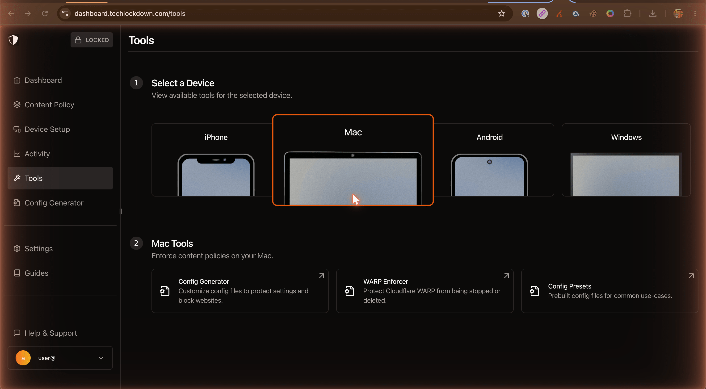
Tools → select Mac → three Mac-specific tiles appear below. - The WARP Enforcer page shows three steps with download buttons. Click Download Enforcer Tool — saves the
Tld_Cloudflare_Enforcer_signed_*.pkgto your Downloads folder.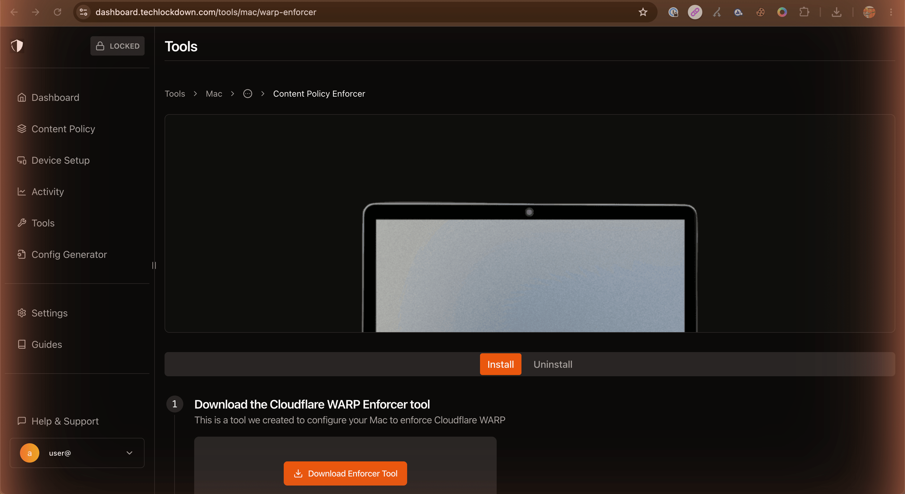
Tools → Mac → WARP Enforcer. The Install tab walks through Download → Open from Downloads → Run installer. The Uninstall tab next to it is the legitimate undo path — which after Profile Lock requires you to unlock first. - Separately, install Cloudflare's WARP client. The official downloader is at 1.1.1.1, or use the link Tech Lockdown surfaces inline (Tech Lockdown ships a known-good build named like
WARP_2026.4.1350.0.pkg). - Install WARP first. Double-click the WARP
.pkg, follow the standard macOS installer flow. - After it installs, sign in to your Tech Lockdown / Cloudflare team. The WARP menu bar icon should turn from grey to filled-blue when connected.
- Now install the Enforcer Tool
.pkg. It runs silently — no UI. It registers a launch daemon under/Library/LaunchDaemons/that watches WARP.
On recent macOS versions, double-clicking the Enforcer .pkg sometimes produces a "could not verify is free of malware" dialog rather than launching the installer. This is expected — the Tech Lockdown installers are signed, but Gatekeeper occasionally over-blocks anything not Mac-App-Store-distributed. The fix takes thirty seconds:
1. In the warning dialog, click Done (do not click "Move to Trash"). 2. Open System Settings → Privacy & Security. 3. Scroll to the Security section near the bottom. You'll see "Tld_Cloudflare_Enforcer… was blocked to protect your Mac." 4. Click Open Anyway. Authenticate. Click Open Anyway again in the second dialog. The installer then runs normally. Same routine if WARP itself ever triggers the same warning.
Verify
Open Terminal and run:
# WARP should report "Status: Connected"
warp-cli status
# A gambling apex domain should now resolve to a block response
dig +short stake.comIf dig returns 0.0.0.0 or a Cloudflare IP that doesn't actually serve the site, the block is live.
If WARP gets stuck in an "IPC Error" state
This sometimes happens after the WARP daemon updates or after a long sleep. The fix is one command:
sudo launchctl kickstart -k system/com.cloudflare.1dot1dot1dot1.macos.warp.daemonThat restarts the WARP daemon cleanly. The Enforcer Tool will normally do this for you automatically, but the manual command is good to know.
/etc/hosts, locked
The /etc/hosts file on macOS is the oldest form of DNS in the world: a flat text file that maps hostnames to IPs, consulted before any network DNS query. Whatever's in there wins over whatever Cloudflare or your local resolver would otherwise return.
We use it as a defence-in-depth layer underneath WARP. If WARP momentarily drops, the system falls back to whatever DNS your network is using — and we don't want that fallback to suddenly let you onto Stake.com because cellular handover took 800 ms. The hosts file plugs that gap by hardcoding every gambling apex to 0.0.0.0 regardless of what DNS says.
The bundled macos/hosts file is a 4.4 MB sinkhole hosts file containing the same set of gambling apex domains used by the Cloudflare lists, with both IPv4 and IPv6 sinkhole entries. It's safe to use as-is.
Install it
- Back up your current hosts file:
sudo cp /etc/hosts /etc/hosts.backup. - Decide whether to replace or append:
- Replace (cleaner — if your existing hosts file only has the default Apple entries):
sudo cp macos/hosts /etc/hosts - Append (if you have other custom entries you want to preserve):
sudo sh -c 'cat macos/hosts >> /etc/hosts'
- Replace (cleaner — if your existing hosts file only has the default Apple entries):
- Flush the DNS cache so the new entries take effect:
sudo dscacheutil -flushcache && sudo killall -HUP mDNSResponder
Lock it
Now apply the system-immutable and user-immutable flags. This makes the file refuse to be modified or deleted by any user — including root — until you remove the flags by booting into Recovery Mode.
cd macos
sudo ./lock_hosts.shThe script verifies the lock by attempting (and failing) to append to the file and to delete it. If both attempts are refused, it prints ✓ /etc/hosts is now LOCKED.
dnsforce — the DNS firewall
Everything above this layer assumes that your apps actually use the system's DNS resolver. The problem is that modern browsers don't, by default — Chrome, Firefox, Edge, Brave, Opera, and most of their forks ship with DNS-over-HTTPS (DoH) enabled, which means they bypass /etc/hosts entirely and resolve domain names by talking encrypted HTTPS to whichever DoH provider they prefer. Cloudflare's 1.1.1.1 over DoH, Google's 8.8.8.8 over DoH, NextDNS, AdGuard — there are dozens.
If you don't close this hole, the entire setup above is a façade. Chrome will happily resolve stake.com through Cloudflare's DoH endpoint and ignore everything you've done.
dnsforce is the layer that closes it. It's a small set of PF (packet filter) rules — the same kernel firewall that macOS uses for AirDrop, AirPlay, and Apple's own anchor system — plus a daemon and a watchdog. The rules do four things:
- Allow plain DNS (port 53) only to your current system resolvers. The list of allowed resolvers updates automatically when you switch networks (WiFi → cellular → hotspot → airport WiFi → home VPN).
- Block DNS-over-TLS (port 853) outright.
- Block DNS-over-QUIC (UDP port 8853) outright.
- Block DNS-over-HTTPS (port 443) to a comprehensive list of public providers: Cloudflare, Google, Quad9, AdGuard, NextDNS, Mullvad, ControlD, OpenDNS, CleanBrowsing, DNS.SB, LibreDNS, Yandex, DNSPod, Alibaba, Comodo, Verisign, Hurricane Electric — about 80 known endpoints.
On top of that, a watchdog daemon resurrects the main daemon if anything tries to unload it with launchctl bootout. And on top of that, every file in the stack is locked with chflags schg, the same immutable flag we applied to /etc/hosts.
Install
The bundled macos/dnsforce/setup.sh is a one-shot script that runs three sub-scripts in sequence and asks for confirmation once:
cd macos/dnsforce
sudo ./setup.shInside, that runs install.sh (deploy main daemon), install-keeper.sh (deploy watchdog), and lock.sh (apply immutable flags). Total time: under a minute. Nothing in /etc/ is touched; everything lives under /usr/local/etc/dnsforce/ and /Library/LaunchDaemons/.
If you prefer to run the steps separately for inspection, you can. The full README for the dnsforce module is in macos/dnsforce/README.md.
Verify
# Plain DNS to a non-system resolver — should TIMEOUT after ~3 seconds
dig @8.8.8.8 example.com +time=3 +tries=1
# DoH to Cloudflare — should FAIL with connection refused or timeout
curl -m 5 'https://1.1.1.1/dns-query?name=example.com' \
-H 'accept: application/dns-json'
# Live sync log — you should see entries when you switch networks
tail -f /var/log/dnsforce.logAbout captive portals (airports, hotels, airplanes)
Public Wi-Fi networks with captive portals work fine with dnsforce in nearly every case, because the captive portal's own DNS server is advertised via DHCP and gets added to your system resolvers automatically. The sync daemon then includes it in the allowlist, and the portal page loads normally.
The one case where it goes wrong: if you'd previously hard-coded 1.1.1.1 as a manual DNS server on a specific Wi-Fi network (System Settings → Network → Wi-Fi → Details → DNS), the captive portal's DNS won't get picked up automatically and the portal won't load. If that happens, remove 1.1.1.1 from the manual DNS list on that network — macOS will then use the network's pushed DNS, which the captive portal expects. After you've authenticated, the system goes back to using WARP and Cloudflare Gateway normally.
This is the one place in the setup where the magic number 1.1.1.1 can cause friction. Worth mentioning that in normal use — home network, normal Wi-Fi, cellular, airplane Wi-Fi without aggressive captive portals — none of this comes up at all.
Browser DoH lock profile
dnsforce blocks DoH at the network layer, which is what we want. But you can also block it one layer higher — inside each browser, using a macOS configuration profile that tells the browser "DoH is disabled, and the user isn't allowed to re-enable it from preferences."
Belt and braces. dnsforce is the brace; the profile is the belt.
The bundled macos/disable-doh-and-proxy.mobileconfig is a single configuration profile that, when installed:
- Disables DoH and locks proxy settings to
directin 33 browser variants: Chrome, Chrome Beta/Dev/Canary, Chromium, Brave (4 channels), Edge (4 channels), Opera (4 variants including GX), Vivaldi (2), Yandex, Arc, Dia, Comet, Whale, SRWare Iron, Thorium, ungoogled-chromium, Firefox (4 channels), LibreWolf, Waterfox, Mullvad Browser. - Sets
PayloadRemovalDisallowed=trueand includes acom.apple.profileRemovalPasswordpayload — meaning removing the profile from System Settings requires a password you'll set, and discard.
The profile is shipped unsigned, with the removal-password field deliberately empty. You need to fill it in before installing.
Set the removal password
Two ways to do this. Pick whichever you're more comfortable with.
Option A — Apple Configurator 2 (GUI)
- Install Apple Configurator 2 from the Mac App Store. Free.
- Open it. Drag
macos/disable-doh-and-proxy.mobileconfigonto the Configurator window. It opens the profile in the editor. - In the left sidebar, scroll down to the Removal Password payload (the last one in the list).
- Generate a long random password — at least 20 characters, mixed case and symbols. Use 1Password, Bitwarden, or just bash:
openssl rand -base64 24. - Paste it into the Removal Password field. Do not save it anywhere. The whole point is to forget it.
- File → Save. Configurator will write the password into the profile.
Option B — edit the XML directly
The profile is plain XML. Open it in any text editor and find the empty <string></string> immediately after <key>RemovalPassword</key>. Put your generated random string between those tags. Save the file.
Install it
- Double-click the (now password-protected)
.mobileconfigfile. macOS will warn that the profile is unsigned. Accept. - Open System Settings → Privacy & Security → Profiles (in macOS 15, this is under the General sidebar item). The profile shows up as pending.
- Double-click it. Confirm install. Enter your Mac admin password.
- The profile is now active. Try opening Chrome → Settings → Privacy and Security → Use secure DNS. The option is greyed out, with a small "managed by your organization" indicator.
On recent macOS versions, installing a configuration profile via double-click sometimes shows the profile as pending in System Settings and requires you to navigate to the Profiles pane and approve it within 8 minutes, otherwise it disappears. If your install seems not to take effect, check Profiles in System Settings and look for a pending one to approve.
Throw the password away
If you used openssl rand in a terminal, close the terminal and clear scrollback. If you used 1Password or Bitwarden, delete the entry. If you wrote it on paper, hand the paper to your accountability partner or burn it.
From this point on, removing this profile from System Settings requires that password. You don't have it. Future-you doesn't have it. That's the point.
iOS configuration
iOS is, paradoxically, the easiest device to lock down — because Apple gives you a single sealed mechanism (the configuration profile) that the user genuinely cannot remove if it's been provisioned correctly.
You don't install anything by hand here. Tech Lockdown's wizard generates a signed iOS configuration profile bound to your account; you install it once via Safari on the phone, and that's it. No app to keep open, no daemon, nothing visible. The phone just stops loading gambling sites and stops launching gambling apps.
What goes into the profile
When you walk through Tech Lockdown's iOS configuration tabs (covered in Section 04), the wizard builds a profile with these payloads:
- DNS Settings (managed) — Routes all DNS lookups on the device to Cloudflare Gateway over DNS-over-TLS, including the unique gateway hostname for your account. Crucially,
ProhibitDisablement=truemeans iOS itself refuses to let you turn this DNS profile off. There isn't even a toggle in Settings. - Application Access — A list of blocked app bundle IDs. Apps in this list cannot launch while the profile is installed. The default list is in
reference/tld-ios-blocked-apps.txt; the headline entries arecom.kick.mobileandcom.kick.streaming(the Kick livestreaming app, which hosts large amounts of slot-stream content). - Web Content Filter (built-in) — A separate iOS-native URL deny list, enforced by Apple's content filter independently of DNS. This is the belt-and-braces for iOS: even if DNS is somehow circumvented, the URL filter still kicks in. The default list (in
reference/tld-ios-web-content-filter.txt) is a top-priority subset of about a dozen high-traffic gambling sites. - PayloadRemovalDisallowed set to
trueon the outer payload — meaning iOS will not present any UI for removing the profile. The "Remove Profile" button simply isn't there.
Why this layout is good
Three properties make this the most robust part of the whole stack:
- It doesn't interfere with anything else. No always-on VPN icon in the status bar, no battery drain, no app-switching weirdness. The DNS-over-TLS handoff happens at the iOS networking layer with no visible footprint.
- It cannot be removed. Because
PayloadRemovalDisallowed=true, iOS won't even show a remove button. The only way to undo it is to perform a full factory reset of the phone — which erases all your data, your photos, your iMessages, your apps. That's a high enough cost that you wouldn't do it on impulse. - DNS is pinned at the OS layer, not the app layer. Every app on the phone — Safari, Chrome, in-app browsers, third-party apps — uses the locked DNS. There's nothing to misconfigure per-app.
Install the profile
- In Tech Lockdown's dashboard, complete the iOS configuration wizard (see § 04 for the specific tab settings).
- At the end, the wizard generates a download link or QR code for the signed
.mobileconfigfile. Open it from Safari on the iPhone (not Chrome — Chrome won't hand the profile to iOS correctly). - Safari downloads it. iOS prompts you to review and install it. Go to Settings → General → VPN & Device Management → [downloaded profile].
- Tap Install, enter your iPhone passcode, accept the warnings about managed DNS and content filtering.
- The profile is now installed and locked. Try opening
stake.comin Safari — it should fail to load.
About modifying or adding settings later
The Tech Lockdown UI lets you edit the underlying configuration (add domains, change app blocks) and push an update to your device without re-installing. But the update path goes through your Tech Lockdown account — and after Section 11 you won't be able to log in to that account casually. Which is correct. The right time to fine-tune the iOS setup is now, while you're still able to.
Lock yourself out of Tech Lockdown
You now have a working stack. Everything below the surface is hard to undo. But Tech Lockdown's web dashboard is still wide open — sign in with your email and password and you can edit blocklists, push new profiles, or undo the iOS DNS settings in two clicks.
So before you walk away, you lock the management surface. Tech Lockdown ships a feature specifically for this: Profile Lock. It's a per-account setting that requires extra steps before you can unlock the dashboard and make changes.
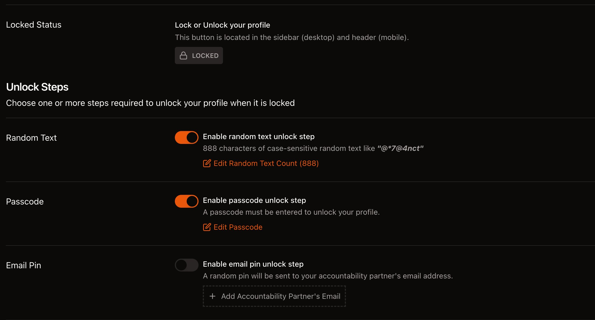
The recommended configuration
Two unlock steps, no third:
- Random Text — ON, count 888. Tech Lockdown generates an 888-character random string. To unlock your account, you have to retype it correctly. Case-sensitive. No copy-paste. 888 characters takes about 10 minutes of focused typing if you're fast, longer if you make mistakes and have to restart. That's the point. It's a tax on impulsivity, paid in time and attention.
- Passcode — ON. A second, additional unlock step. You set a passcode of any length. Importantly: you'll then write this passcode on a piece of paper and either give it to your accountability partner or shred it. Without the passcode, even completing the 888-char random text doesn't unlock the account.
- Email Pin — OFF. Tech Lockdown offers an unlock option that emails a PIN to an "accountability partner's email." Don't use this. It creates a bypass: a one-time PIN that arrives in an inbox you can read. Better to write the passcode on paper and physically give it to a person.
Set it up
- In Tech Lockdown's dashboard, go to Account → Profile Lock.
- Toggle Random Text ON. Click Edit Random Text Count and set it to
888. - Toggle Passcode ON. Click Edit Passcode and set it to a passcode of your choice — a few words, a phrase, doesn't have to be cryptographically strong.
- Leave Email Pin OFF.
- Write the passcode on a piece of paper. Do not save it digitally.
- Hand the paper to your accountability partner, or burn it in front of them.
- Click the Lock button (top right of the Tech Lockdown UI, or in the mobile header). Your account is now locked.
From this point forward, every time you'd want to log in to change anything, you have two choices: retype the 888 characters of random text and obtain the passcode from your partner; or give up and walk away. Both are good outcomes. The first one takes 15 minutes of focused effort and a phone call to a human, which is more than enough time for an urge to pass.
Two extra settings to consider
While you're in the Profile Lock screen, Tech Lockdown exposes two further levers that strengthen the setup if you want them:
- Unlock Delay — instead of (or in addition to) the unlock steps, you can configure a fixed cool-off period that must elapse before the unlock completes. Setting this to several hours (or a full day) means even if you successfully retype the random text, the changes don't apply until tomorrow morning. This is the closest software equivalent to "sleep on it." Recommended.
- Re-lock Automatically — after you finish making changes, the profile re-locks itself within a short window. Saves you from forgetting to re-lock and leaving the door open. Recommended.
One worth knowing about but not recommended: Email Pin. Tech Lockdown will send a one-time PIN to a designated email address. If that address is your own inbox, you've created a bypass — you'd just read the email. If it's your partner's, you've replicated what the Passcode step does, with more moving parts. Stick to Random Text + Passcode.
The Random Text count maxes out at 1000 characters at the time of writing. 888 takes about 10–15 minutes of careful typing; 1000 takes a few minutes longer. The difference doesn't really matter — both are far longer than any urge will sustain.
It would feel symmetrical to add techlockdown.com to the blocklist and slam the last door. Don't. Tech Lockdown's own documentation calls this out: you may legitimately need to log back in to add a new site you've discovered, view DNS logs to debug a problem, or coordinate with an accountability partner. Profile Lock already prevents you from making the policy less restrictive — that's what's enforcing the discipline, not the inability to reach the URL.
Lock yourself out of Cloudflare
Same logic, applied to Cloudflare. Anyone with your Cloudflare credentials can log in to the Zero Trust dashboard and delete the DNS Block rule — instantly nullifying the whole stack. So we make that path expensive too.
- In Cloudflare → My Profile → Authentication, enable Two-Factor Authentication. Choose Security Key (WebAuthn) if you have a hardware token like a YubiKey, otherwise TOTP via Google Authenticator / 1Password / Bitwarden.
- Cloudflare will give you a set of recovery codes. Write them down on a single piece of paper. Do not save them digitally.
- If you used TOTP: also write down a one-time copy of the TOTP seed (the QR code data). Stash it with the recovery codes.
- Hand the paper to your accountability partner, or shred it.
- Log out of Cloudflare on every device.
Optional but recommended: change your Cloudflare account email to something you don't otherwise use (a forwarding alias), and change the password to a random 32-character string that you do not save. Without 2FA and the recovery codes and the password, future-you cannot log back in.
One extra layer: API/Terraform read-only mode
Cloudflare exposes an account-level toggle called API/Terraform read-only mode. When on, the entire account becomes read-only via API and Terraform — you can still browse the dashboard, but no programmatic call can modify rules, lists, or policies. For our purposes, this means even if future-you somehow recovers the API token from a backup or a screenshot, you cannot use it to delete the blocklist. The toggle lives in My Profile → Preferences → Editing Permissions, or under the account-level Configurations page. Once enabled, you'll see "API/Terraform read-only mode enabled" in the bottom of the Zero Trust sidebar. Turning it off requires logging into the dashboard (which is already protected by your 2FA and partner-held recovery codes). Recommended belt-and-braces.
Optional — Applivery MDM (for the engineer-proof setup)
This section is for people who already know how to use Terminal, who know about Recovery Mode, and who know — uncomfortably well — a bypass. You would say: there has to be some way to undo it. But "some way" needs to be so inconvenient enough that you can't slip through it during an urge.
This section closes that path. It uses an MDM (Mobile Device Management) service called Applivery to push two additional protections onto your Mac:
- An MDM-enforced profile removal password — separately from the password you set in § 09. The DoH-disable profile becomes removable only with a password Applivery holds, that you'll set and discard.
- An MDM-pushed Recovery Lock — a firmware-level password that's prompted before Recovery Mode itself will boot. Without the Recovery Lock password, you can't even reach the Terminal in Recovery Mode.
Together, those two close the Recovery Mode bypass entirely. The stack becomes genuinely irreversible without going through Applivery's password reset flow — which itself requires logging into Applivery, which itself can be 2FA'd and locked away.
What this costs
Applivery charges from €3 per device per month on the Advanced plan (billed annually), which is the tier that supports macOS devices and the profile removal password + Recovery Lock features. Monthly billing costs slightly more. They offer a 14-day free trial on every plan, and 14 days is more than enough to set everything up, push the policies, verify, and then cancel. Cancellation does not remove the policies — those are written to firmware and to macOS — so you only pay if you want ongoing manageability after the initial setup.
The author of this guide isn't affiliated with Applivery; they were chosen after testing several MDM platforms because they have a clean UI, a small-business-friendly pricing model, and support for the specific Apple commands we need.
Step 1: Sign up and enroll your Mac
- Sign up at dashboard.applivery.io and start the 14-day trial of the Advanced plan. Pick a workspace name when prompted — anything you'd be comfortable seeing in your own dashboard later. Applivery's top navigation is consistent across the product: Overview · Devices · Policies · Resources · Automation, with workspace picker and your trial countdown in the top-right.
- Inside Applivery, go to Devices in the top nav, then click Enroll device. Choose macOS. Applivery generates an enrollment URL and shows a QR code.
- Open the enrollment URL on the Mac you're locking down. Safari downloads a small
.mobileconfigprofile and prompts you to install it from System Settings → General → Device Management. - Approve it. macOS asks for your admin password, then enrolls. You'll see "Enrolled in MDM by Applivery" in System Settings. No factory reset is needed — UAMDM enrollment is the modern path. Back in Applivery's Devices page, your Mac now appears in the list with its hostname, OS version, current battery, and applied policies (initially empty).
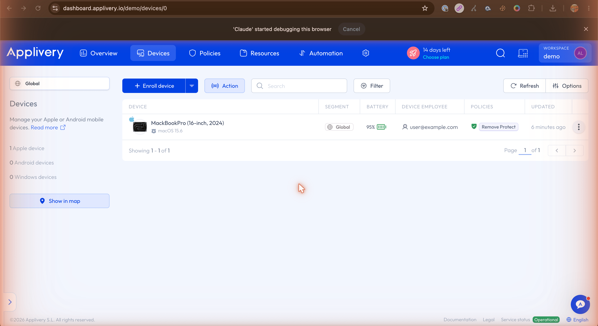
Step 2: Create a profile-removal-password policy
This is the step that actually puts a password-prompt on top of the DoH-disable profile from § 09. You'll do it inside Applivery as a click-through. The XML you'll need to paste is in step 3 below — but for now, just follow the screenshots in order.
- In Applivery, go to Policies in the top nav. Create one (the "New policy" button is on the Policies page). Then click the policy to open its detail view, and scroll the sidebar of payload categories to the bottom — you'll see a highlighted + Add configuration button. Click it.
- Applivery now shows the configurations editor for this policy. Click the dark blue + Import button next to the configuration search bar.
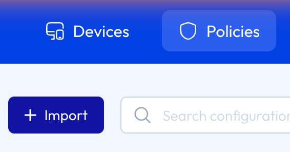
The + Import button is how you bring in an existing .mobileconfigXML — which is exactly what we have. - An Import profile modal opens with a large text area. First, open Terminal and run
openssl rand -base64 24to generate a long random password — write the output on a piece of paper, do not save it anywhere digital. Then paste the XML below into the modal's text area, replacingYOUR_STRONG_PASSWORD_HEREwith the password you just generated. The moment the paste parses correctly, Applivery shows a green "1 payload found" indicator in the bottom-left. Click Preview.<?xml version="1.0" encoding="UTF-8"?> <!DOCTYPE plist PUBLIC "-//Apple//DTD PLIST 1.0//EN" "http://www.apple.com/DTDs/PropertyList-1.0.dtd"> <plist version="1.0"> <dict> <key>PayloadContent</key> <array> <dict> <key>PayloadType</key> <string>com.apple.profileRemovalPassword</string> <key>PayloadIdentifier</key> <string>com.selfexclusion.applivery.removalpassword</string> <key>PayloadUUID</key> <string>A1B2C3D4-E5F6-7890-ABCD-EF1234567890</string> <key>PayloadVersion</key> <integer>1</integer> <key>RemovalPassword</key> <string>YOUR_STRONG_PASSWORD_HERE</string> </dict> </array> <key>PayloadType</key> <string>Configuration</string> <key>PayloadIdentifier</key> <string>com.selfexclusion.applivery.removalpassword.container</string> <key>PayloadUUID</key> <string>B1C2D3E4-F5A6-7890-BCDE-F12345678901</string> <key>PayloadVersion</key> <integer>1</integer> </dict> </plist>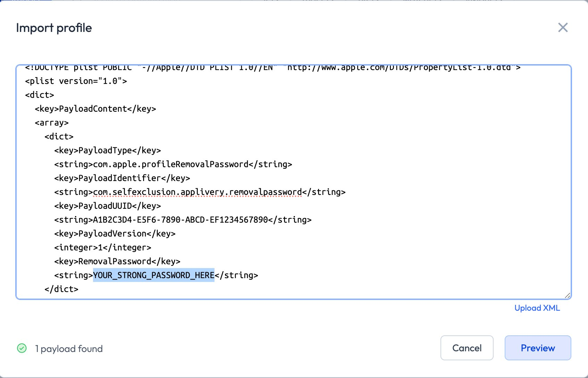
Modal with the XML pasted. The "1 payload found" badge tells you Applivery parsed it correctly — if it doesn't appear, check that you pasted the entire block including the surrounding <?xml…>and</plist>lines. - The Preview screen renders the payload as a clean key-value table — you should see
#1 com.apple.profileRemovalPasswordat the top, then your PayloadUUID and the RemovalPassword value (the actual password you just pasted; Applivery shows it in clear text here as a sanity check). Confirm everything looks right and click Import (1).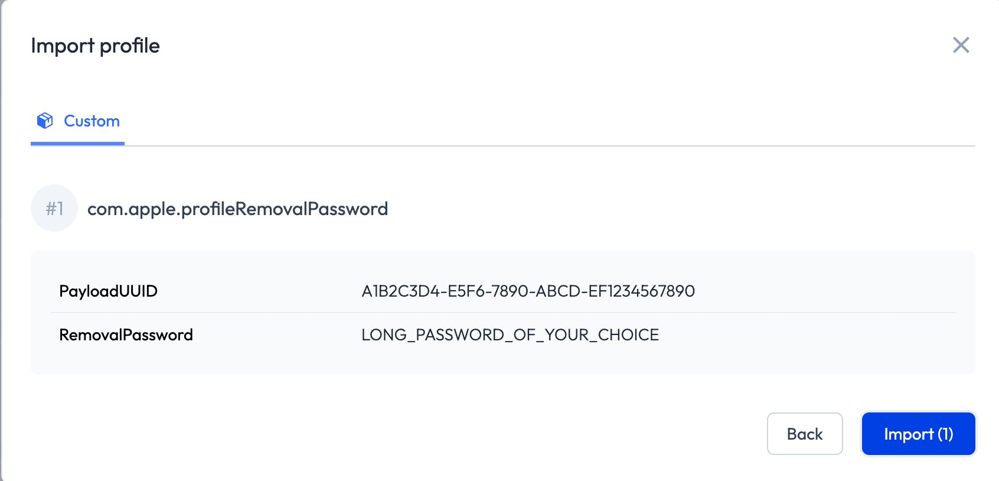
The Preview confirms the parsed payload. Click Import (1) to commit it to the policy. - You're back at the policy detail page. The payload is now part of the policy (Applivery will show it in the Custom section of the sidebar). Scroll down to the Assigned devices section and click + Assign to device.
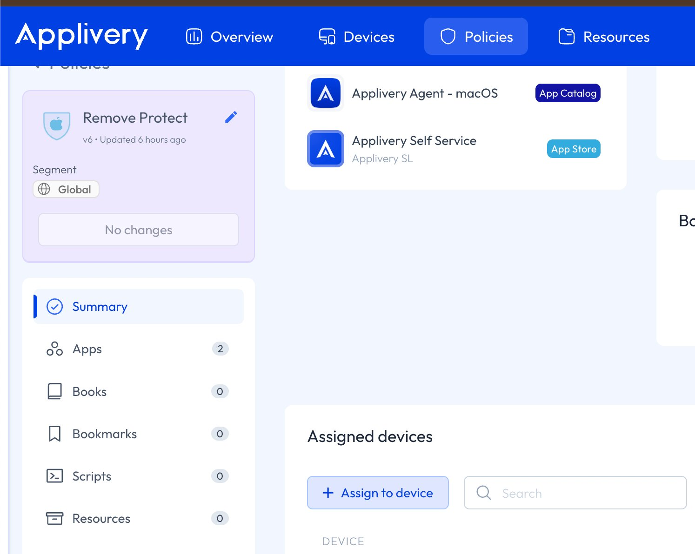
Policy detail after import. Assigned devices is what binds this policy to a specific Mac. - A modal opens asking which device to apply the policy to. Click the Select a device dropdown and pick your Mac (yours will look something like "MacBookPro (16-inch, 2024) — macOS 15.6"). Confirm.
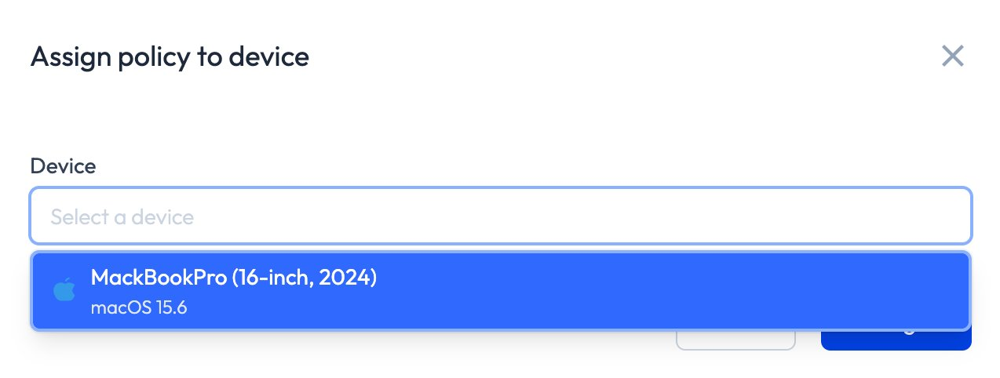
Pick your Mac from the dropdown. Within ~30 seconds Applivery pushes the configuration. - Wait ~30 seconds, then verify on your Mac: open System Settings → Privacy & Security → Profiles. The DoH-disable profile from § 09 should now show as protected by an MDM-managed removal password. Trying to remove it will prompt for a password you don't have.
- Throw the password away. Hand the paper to your accountability partner, or burn it. Same as the other passwords in this guide — the point is that future-you cannot reach it.
In the Applivery Devices list, the policy you just applied will show in the "POLICIES" column for your Mac — for example, "Remove Protect". That's the audit trail; it's how you confirm the policy is bound to the device.
Step 3: Set Recovery Lock
Recovery Lock is a firmware-level password that Apple Silicon Macs prompt for before Recovery Mode will boot. It's the highest-level lockdown Apple provides outside of corporate device-management mode, and it's the thing that closes a possible engineer-level bypass.
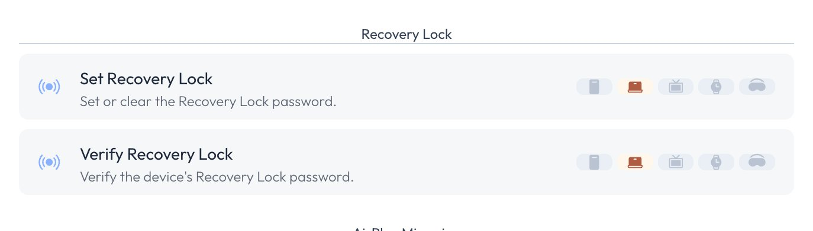
- In Applivery, go to your Mac's device page → Commands.
- Find Set Recovery Lock. Click it. Enter a new long random password — different from the profile removal password above. Generate it the same way (
openssl rand -base64 24) and immediately discard. - Applivery sends the command to your Mac. Wait 30 seconds.
- Use Verify Recovery Lock (right below Set Recovery Lock) to confirm the lock is in place.
- Discard the password. Same routine — paper, partner, burn.
From this point: rebooting into Recovery Mode prompts for the Recovery Lock password. Without it, you will never reach a bypass.
Step 4: Lock yourself out of Applivery
Same idea as for Tech Lockdown and Cloudflare. Enable 2FA on the Applivery account, write recovery codes on paper, hand to your partner. Cancel the subscription if you want — the policies stay in effect even after the subscription lapses, until you actively unenroll the device.
If you somehow lose both the Recovery Lock password and access to your Applivery account, the Recovery Lock can be cleared by Apple Support with proof of device ownership (the original purchase receipt). This is a deliberate escape hatch for exactly the case where you've genuinely locked yourself out and need legitimate access. It's not a quick path — Apple's support process takes days to weeks — but it does exist. It's not a bypass; it's a safety net that requires a level of patience an urge wouldn't sustain.
Sanity checks
Before you walk away, run through this list. If any of them fails, fix that layer before you finalise. After you've thrown away passwords, fixing things gets meaningfully harder.
- A blocked site doesn't load. Try Safari →
https://stake.com. You should get a DNS error or a Cloudflare "blocked by your organization" page. - Chrome with DoH on still doesn't load it. Open Chrome → Settings → Privacy and Security → Use secure DNS. Verify the toggle is greyed out (managed). Now visit a blocked site. Should fail.
- WARP can't be uninstalled. Try dragging the WARP app from /Applications to Trash. macOS prompts for admin password. After entering it, the uninstall is blocked or reverts within seconds (Enforcer Tool's job).
- /etc/hosts can't be edited. Try
sudo sh -c 'echo "1.2.3.4 test" >> /etc/hosts'. Should fail with "Operation not permitted." - The DoH-disable profile can't be removed. System Settings → Privacy & Security → Profiles → click the DoH profile → click Remove. You should be prompted for a password. Cancel the prompt.
- dnsforce is running.
sudo launchctl print system/com.selfexclusion.dnsforce | grep stateshould returnstate = running. Same for...dnsforce-keeper. - iOS profile can't be removed. On the iPhone: Settings → General → VPN & Device Management → [your profile]. The Remove Profile button shouldn't appear at all.
- Tech Lockdown account is locked. Sign out and try to sign back in. You should be prompted to retype 888 random characters and enter a passcode you've given away.
- Cloudflare requires 2FA. Sign out and try to sign back in. You should be prompted for your 2FA code.
- (Optional) Recovery Lock works. Restart the Mac, hold the power button on Apple Silicon to attempt to enter Recovery Mode. You should see a Recovery Lock password prompt. Press the power button to cancel and boot normally.
If everything checks out, you're done. Throw away the rest of the passwords. Take a walk.
When things go wrong
"I can't access a captive portal (airport, hotel)"
See the section on dnsforce for the long version. Short version: if a Wi-Fi network had 1.1.1.1 manually configured as DNS, remove it from System Settings → Network → Wi-Fi → Details → DNS. Reconnect to the network. The portal should now load. After authenticating, normal browsing resumes through WARP.
"DNS broke after switching from WiFi to cellular"
dnsforce updates its allowlist on network changes within about 60 seconds. If it's been longer than that and DNS still isn't working, check the log:
tail -50 /var/log/dnsforce.logIf you see errors or no recent activity, manually trigger a sync:
sudo /usr/local/sbin/dnsforce-sync.sh"WARP shows IPC Error and won't connect"
Restart the WARP daemon:
sudo launchctl kickstart -k system/com.cloudflare.1dot1dot1dot1.macos.warp.daemon"I want to add a new gambling site to the block"
Virtually every gambling website as of May 2026, is on the list already, but you can edit the umbrella DNS rule's expression directly in Cloudflare Zero Trust without unlocking Tech Lockdown — go to Zero Trust → Traffic policies → Firewall policies → DNS tab → [the umbrella rule] and append or any(dns.domains[*] == "newsite.com") to the expression. You'll still need to be logged into Cloudflare (which requires 2FA, which requires recovery codes from your partner), and if you've enabled API/Terraform read-only mode (see § 12) you'll need to flip it off in your profile first.
Both paths are intentionally inconvenient. That's the design.
"I can't reach Tech Lockdown or Cloudflare anymore"
That's expected. Both domains are allowlisted in the URLAllowlist of the macOS Content Filter profile (so the management UIs themselves remain reachable), but if you set up the Tech Lockdown account lock, you can't actually sign in casually anymore — you'd have to retype 888 random characters and get the passcode from your partner. The dashboards being technically reachable is not the same as being usable, and the design is deliberate.
"I'm getting a Cloudflare block page on a legitimate site"
Sometimes a non-gambling domain shares infrastructure with a blocked one, or gets caught by the apex match. To allowlist a specific domain, edit the Cloudflare DNS rule expression to add an exception before the block:
# Zero Trust → Traffic policies → Firewall policies → DNS tab → your block rule.
# Edit the expression and add a negation in front:
not any(dns.domains[*] == "legitimate-site.com") and (the existing block expression)This too requires Cloudflare 2FA, which requires partner-held recovery codes. Plan for that inconvenience as part of the design.
When you have an urge right now
If you've come back to this page because you're in the middle of a craving and you're trying to figure out how to undo the setup — please stop reading the instructions and read this paragraph instead.
The setup is doing its job. The friction you're hitting right now is the friction you asked for, on the day you set it up, when you were thinking clearly. The friction is not the problem. The urge is the problem.
The urge will pass. Most cravings, even very intense ones, peak within about 20 minutes and then start to fade. The whole stack is engineered around that fact. Every layer is designed to make undoing the block take longer than the urge would otherwise last — so that by the time you'd finished bypassing it, you'd no longer want to.
Things that help right now, more than fighting the setup:
- Call the person who's holding your passcodes. Tell them you're having an urge. You don't have to ask for the passcode. Just talk to them for ten minutes.
- Call a helpline. They've talked to thousands of people in the exact moment you're in right now.
- US: National Problem Gambling Helpline — 1-800-GAMBLER (1-800-426-2537). 24/7. Free. Confidential.
- UK: National Gambling Helpline — 0808 8020 133 (run by GamCare). 24/7. Free.
- International: Gamblers Anonymous directory by country.
- Leave the room. Walk outside. The combination of physically being away from your computer and getting your heart rate up is unreasonably effective.
- Wait it out. Set a timer for 20 minutes. Do anything else for those 20 minutes. Re-evaluate after.
You set this up because you wanted future-you to be safer than past-you was. Right now, you are future-you, and the setup is the present that past-you bought for you. Let it work.
After the setup
The hardest thing about writing this section is resisting the urge to be preachy. So: briefly.
The setup is a wall around the problem, not a solution to it. It does what it does — it removes the easy path — and that's genuinely valuable. People who have done this report a substantial drop in losses, in time lost, in the background hum of compulsive checking. Removing access removes opportunity, and removing opportunity is the single most evidence-supported behavioural intervention for any compulsive behaviour. The Cochrane reviews back this up.
But removing access doesn't address why the compulsion is there in the first place. The block buys you time and headspace. What you do with the time and headspace is the actual work.
What helps, beyond software
- Cognitive Behavioural Therapy (CBT) has the strongest evidence base for treating compulsive gambling, with meaningful improvements lasting beyond the treatment period. Most therapists who treat anxiety or substance-use disorders also work with behavioural addictions. Ask your GP for a referral, or look for a therapist who lists "behavioural addictions" or "process addictions" in their specialties.
- Peer support groups like Gamblers Anonymous, SMART Recovery, and online communities like r/problemgambling. Meeting other people who've been through the same thing matters more than most things.
- Financial steps: bank-level gambling transaction blocks (Monzo, Lloyds, Barclays, Revolut, Chase UK, and many others now offer these), self-exclusion via GAMSTOP (UK) or BetBlocker (worldwide), and credit freezes if you've been using credit to gamble.
- Talking to one trusted person, whether a partner, a sibling, a sponsor, or a therapist. Compulsive gambling is the most secret-keeping of the addictions, and secrecy is what it runs on. Saying it out loud to one person is often the moment the spell breaks.
Long-term: support resources
| Country | Resource | Contact |
|---|---|---|
| US | National Council on Problem Gambling | 1-800-GAMBLER (1-800-426-2537) · ncpgambling.org |
| UK | GamCare / National Gambling Helpline | 0808 8020 133 · gamcare.org.uk |
| UK | NHS National Gambling Service | Self-referral via nhs.uk |
| UK | GAMSTOP self-exclusion | gamstop.co.uk (free, blocks all UK-licensed sites for 6mo / 1y / 5y) |
| International | Gamblers Anonymous | gamblersanonymous.org (find local meetings) |
| Australia | Gambling Help Online | 1800 858 858 · gamblinghelponline.org.au |
| Canada | ConnexOntario / provincial helplines | 1-866-531-2600 (Ontario) · responsiblegambling.org |
| EU (multiple) | EUROPE Federation of Help Lines | gaminghelpline.eu (directory by country) |
Credits, license, disclaimers
This guide and the accompanying files are released anonymously by someone who built this stack for themselves and decided that other people in the same situation shouldn't have to figure it out alone.
No part of this guide is affiliated with, endorsed by, or sponsored by Cloudflare, Tech Lockdown, Applivery, Apple, or any other company named here. Their names appear because they are the tools that worked, after a long process of trying everything else.
Maintenance & contributions
The author checks the GitHub repository every Sunday to merge pull requests, triage issues, and refresh anything that's gone stale (TLD UI changes, Cloudflare path renames, new gambling apex domains worth adding to apex_only.txt). If you submit something on a Tuesday, expect a response by the following Sunday at the latest. Outside of that weekly window, the author is deliberately disengaged — anonymity is part of the design.
Top contribution priority right now is a Windows port. Every commercial tool this stack depends on already supports Windows out of the box:
- Tech Lockdown has a Windows config generator and a Cloudflare WARP Enforcer Tool for Windows (see help.techlockdown.com → Tools for both). The 888-character Profile Lock works identically on the Windows dashboard.
- Cloudflare WARP ships a Windows client; the Cloudflare Gateway rules and Lists apply to it the same way they do on macOS — the migration script doesn't care which OS the device runs.
- Applivery supports Windows 10 and 11 on the Advanced plan, including custom configuration profiles and remote commands. Windows uses a different mechanism for the "Recovery Lock" equivalent (BitLocker recovery key + Secure Boot + Windows Hello PIN), and the profile-removal-password concept maps to Windows MDM's
RestrictionGroups/ Configuration Service Provider policies.
What's not covered yet, and what a Windows port would need to invent equivalents for:
- The
/etc/hosts+chflags schglock. Windows has ahostsfile atC:\Windows\System32\drivers\etc\hosts. The closest equivalent tochflags schgis removing all write permissions for everyone (including Administrators) viaicaclsand locking via Group Policy or AppLocker. A clean replacement script would mirror whatlock_hosts.shdoes. - The
dnsforcePF firewall. Windows doesn't have PF, but it does have the Windows Filtering Platform (WFP) and Windows Defender Firewall with Advanced Security. WFP rules can block outbound packets to DoH provider IPs (port 443, IP-based) and to ports 853 / 8853 the same way PF does. A Windows port of dnsforce would be a small service that maintains those firewall rules across network switches. - The DoH-disable configuration profile. Chrome, Edge, Firefox, Brave, etc. on Windows all read their managed-policy values from the Windows Registry under
HKLM\Software\Policies\<Vendor>\<Browser>. The sameDnsOverHttpsMode = "off"+ProxySettings = directvalues from the macOS configuration profile translate one-for-one to registry entries. A.regfile or a Group Policy template would do it.
If you'd like to take on the Windows port, fork the repository, build the parallel windows/ directory next to the existing macos/, and open a pull request. The architecture chapter (§ 02) and the layer-by-layer breakdown that follows should give you everything you need to mirror the macOS layers cleanly. Other contributions welcome too — Linux equivalents, Android-via-Applivery extensions, additional blocklist sources, translations of this guide into other languages, accessibility improvements. Open an issue at github.com/stayout-gambling/stayout-gambling/issues if you want to flag something before sending a PR.
License
All of the code, configurations, and text in this bundle are released under a permissive MIT license (full text in the LICENSE file at the root of the bundle). You can use it, modify it, fork it, redistribute it, fold it into your own guide. The only thing you can't do is sell it as a packaged product — partly because that would be ugly, partly because the underlying services it depends on (Cloudflare, Tech Lockdown, Applivery) aren't yours to redistribute.
Reference docs
- Tech Lockdown — Getting Started
- Tech Lockdown — FAQs & Troubleshooting
- Cloudflare Zero Trust account limits
- Cloudflare Gateway Lists docs
- Apple — Configuration profile reference
- Apple — Profile removal password
Disclaimer
This is provided as-is, without warranty of any kind. Modifying system files, locking devices, and pushing MDM profiles can in rare cases cause unexpected behaviour. If you follow this guide and end up with a Mac that won't boot, an iPhone that won't update, or a Cloudflare account you can't access, the answer is the same as it would be for any other significant Apple/Cloudflare issue: contact the respective support teams with proof of ownership. They have unlock processes for exactly these scenarios.
And finally: if this saves one person from one bad night, it was worth writing.